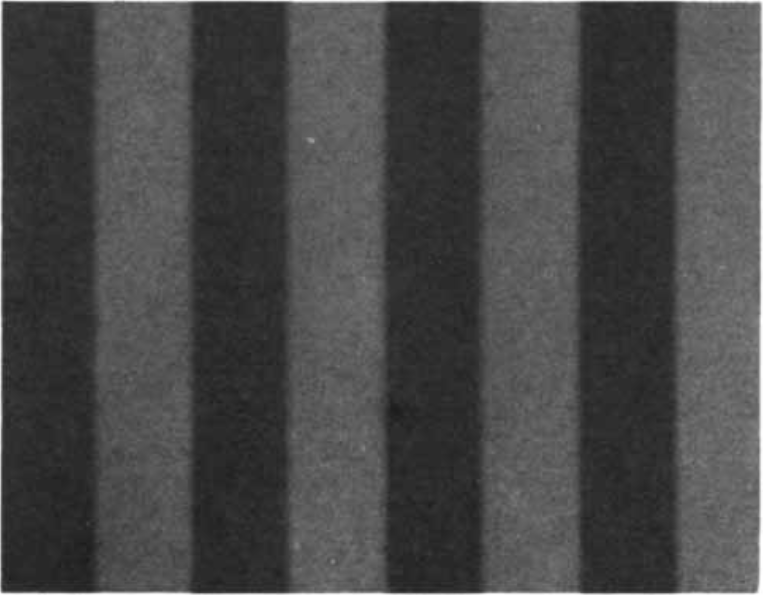

Crafting images via graphs
In my studies, I encountered some images, and I wanted to explore them. I wanted to check the colors of pixels, to tweak parameters and see what happened. The textbook didn't offer that feature, so I took matters into my own hands.
I reverse-engineered the images into an inspectable, tweakable form. I paced back and forth for a while and discovered the UI that each image deserved, then built it.
As I created multiple images and untangled what they had in common, it became clearer and clearer what I was actually doing: creating 3D graphs and using color as the third dimension.
This got me thinking: is it really this difficult to create images by creating graphs? What general-purpose tool could have created these images? The problem with the explorable images on this page is that they took too long to create. Students and scientists need to spend their time thinking about their domain, not about optimizing an HTML canvas's inner loop.
I haven't found the answer. I don't have a general-purpose tool to show you. But I'll show you the explorable images, and I'll show some very early sketches of the tool that I wish existed.
Background: Gratings in visual perception
Optical illusions are an important part of the science of visual perception. Each illusion is a hint into how the brain works. It's a bit of evidence that we can use to figure out what's going on behind the scene.
Spatial frequency has taken hold as a primitive in vision theory. Here, play with this:
That's spatial frequency.
When you move your eyes, you rotate them a certain number of degrees. In vision science, spatial frequency is measured in cycles per degree of the visual field.
Part of the reason spatial frequency gets a lot of air time is because we've shown its profound relevance via optical illusions.
Copied below: Some illustrations and descriptions from the original 1974 Scientific American paper and from a recent textbook.
Grating with harmonics
Here's a set of images and descriptions from a Scientific American paper. I split the images and descriptions into a more comic-book form.
GRATING PATTERNS shown here are photographs of patterns produced on the screen of a cathode ray tube by a voltage-modulating generator.

A simple grating is produced by a single sine wave signal from the voltage generator. The brightness of each vertical bar in this simple grating varies in a sinusoidal manner in the horizontal direction across the pattern.
A more complex grating is formed by the addition of the third harmonic of the fundamental sine wave. The third harmonic has three times the frequency and a third of the amplitude of the fundamental wave.
As the frequency of the light and dark bands increases with the addition of...
the fifth harmonic,

the seventh,

and the ninth,

the individual bands formed by the harmonics become progressively more difficult to see.
With the addition of the 15th harmonic only a square-wave pattern is perceived.
Studies of contrast perception with simple and complex grating patterns such as these indicate that the visual system possesses a number of separate "channels," each spatial tuned to detect a relatively narrow range of spatial frequencies and each with its own range of sensitivity to contrast.
Source: Campwell, F.W. and Maffei, L. (1974). Contrast and spatial frequency. Scientific American 231, 106-13
Sweep grating
Here's another image from the 1974 Scientific American paper:
SINUSOIDAL GRATING with a logarithmic variation in spatial frequency and in contrast demonstrates the loss of contrast sensitivity at low and high spatial frequencies. The contrast decreases from the bottom to the top, but at any one height it is the same for all spatial frequencies. When the grating is viewed, it is apparent that the intermediate spatial frequencies are visible to much lower contrast than either the low or the high spatial frequencies.
Source: Campwell, F.W. and Maffei, L. (1974). Contrast and spatial frequency. Scientific American 231, 106-13
This image was printed to a magazine in 1974 and then scanned back into a computer, so it's hard to say how similar it is to the original. A cleaner version can be seen in recent textbooks:

Contrast sensitivity at various spatial frequencies. The spatial frequency of this grating increases from low at the left to high at the right, and the contrast increases from top to bottom. Clearly, we are most sensitive to some middle spatial frequency, with lower sensitivity to both high and low spatial frequencies.
Source: Basic Vision, Snowden, Thompson, Troscianko, Oxford University Press 2012
But to really convince yourself of this effect, you need to be able to inspect the image. You can't just take the author's word for it. They tell you that what you see is an illusion, but is it really? Is spatial frequency really the thing responsible for these effects?
Explorable images
This is where I step in.
These "explorable images" are a special case of explorable explanations. This ought to become the new normal for publications.
Grating with harmonics
Sweep grating
Drag and inspect
Drag an image from your computer to inspect its color and rows.
A breakdown of the knobs
I'm still writing!